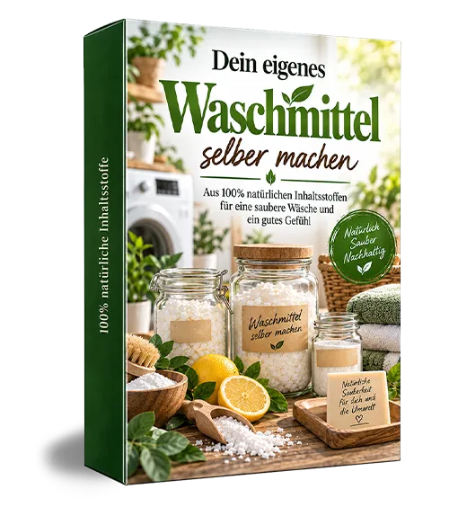
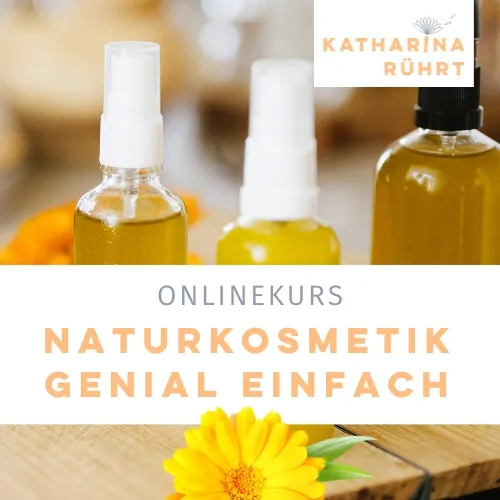
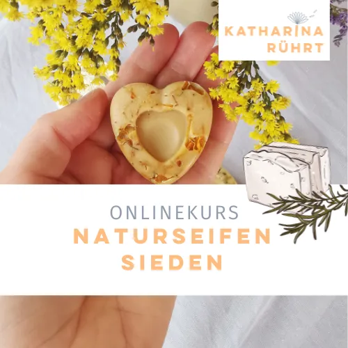
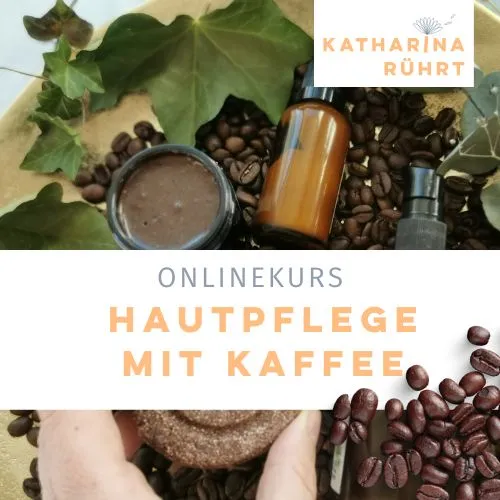

360° Haushalts-Detox-System (von Schöpferinsel)
Produktprofil · Marktplatz-Daten 2026-10-13 · Verkaufsseiten-Recherche 2026-10-13 · Kategorien: Green Products & Environmental Protection, Health & Fitness, Spirituality & Esotericism
- 360° Haushalts-Detox-System (von Schöpferinsel) ist ein/e E-Book in Green Products & Environmental Protection und Health & Fitness, vertrieben über den Digistore24-Marktplatz von Anbieter liebe-leben, gelistet seit 2026-09-07.
- Listenpreis $101.36; Digistore24 meldet — Checkout-Konversion, — Stornierungsquote und 40 % Affiliate-Provision.
- Verdienst pro Verkauf (Affiliate): $40.54 (Anbieter-seitige Statistik, keine Prognose).
Interesse an 360° Haushalts-Detox-System (von Schöpferinsel)? Aktueller Preis, Boni und Garantiebedingungen finden Sie auf der offiziellen Seite des Anbieters:
Offizielle Verkaufsseite ansehen
Affiliate-Link (Werbung) — wir verdienen ggf. eine Provision, ohne Mehrkosten für Sie.

Marktplatz-Daten
| Produkttyp | E-Book |
|---|---|
| Preis | $101.36 (Single payment) |
| Affiliate-Provision | 40 % |
| Garantie/Rückgabe | Laut Verkaufsseite des Anbieters — vor dem Kauf auf der offiziellen Seite prüfen |
| Anbieter | liebe-leben (gelistet seit 2026-09-07) |
| Marktplatz-Statistiken* | Checkout-Konversion — · Stornoquote — · Verdienst/Verkauf $40.54 |
* Anbieter-seitige Statistiken von Digistore24; sie hängen von der Traffic-Qualität ab und sind keine Prognose.
Marktplatz-Beschreibung des Anbieters
<p>Bewerbe ein weltweit einzigartiges Produkt im Bereich nachhaltiges & chemiefreies Leben einer bereits sehr bekannten und beliebten Marke (Schoepferinsel). Mit dem 360° Haushalts-Detox-System triffst du den Nerv der Zeit. Die Zielgruppe von bewussten, naturverbundenen Menschen gehört mitunter zu den kaufkräftigsten überhaupt.<br /><br /><strong>THEMA DES SYSTEMS</strong>: <br />Das Ende der tierischen Täuschung: Wie du deine Räume im Rekordtempo von der Frequenz des Leids befreist und 780 tierische Inhaltsstoffe verbannst. Durchschaue das endlose Produkt-Labyrinth im Supermarkt und gewinne die volle Souveränität über deine Energie zurück – ohne stundenlange Recherche, ohne Dogmen und ohne schockierende Schreckensbilder.<br /><br /><strong>WERBEN OHNE ZU VERKAUFEN: UNSERE AUTOMATISCHE UMSATZKETTE!</strong><br />Das Geniale für dich: Du musst kein Produkt aktiv verkaufen! Teile einfach unsere extrem conversionstarken Freebies oder das interaktive Quiz. Wir übernehmen das psychologische E-Mail-Marketing und closen die Sales vollautomatisch für dich.<br /><br /><strong>WARUM SICH DIE PROMOTION FÜR DICH LOHNT:</strong></p> <ul> <li><strong>40 % Provision</strong> auf das Hauptprodukt UND alle Zusatzprodukte im Verkaufsfunnel! Hoher durchschnittlicher Warenkorb von über 100 € mit bis zu 156,80 € möglichem Gesamtwert.</li> <li><strong>2 conversion-starke Zusatzprodukte</strong> (Order Bump "Haushalts-Apotheke" 24,90 € + Upsell "Detox-Hörbuch" 34,90 €).</li> <li><strong>Extrem hohe Conversion-Rate:</strong> In der Regel kaufen mehr als 12 % der Interessenten im Warenkorb!</li> <li><strong>Stornoquote von 0 %</strong> – Deine Provision bleibt zu 100 % sicher bei dir.</li> </ul> <p><strong><br />JEDER LEAD IST TECHNISCH ABGESICHERT (Multi-Device-Tracking):</strong><br />Deine ID wird durch unser KlickTipp-System fest in das E-Mail-Profil des Nutzers eingebrannt. Kauft der Lead Wochen oder Monate später auf einem ganz anderen Gerät (z. B. am PC statt am Smartphone), sichert dir unsere Server-Schnittstelle die Provision vollkommen unabhängig von Cookies! Wer den kostenlosen Lead bringt, behält den Sale.<br /><br /><strong>DEINE 3 HIGH-CONVERSION PROMO-LINKS (Content-Links):</strong><br />Bewerbe NICHT die Verkaufsseite, sondern nutze diese psychologischen Türöffner (einfach DEINE-ID ersetzen):<br /><br />1. Das Freebie (Insider-Lexikon der 780 tierischen Tarn-Begriffe):<br /><a href="https://www.digistore24.com/content/724764/55830/DEINE-ID" target="_blank" rel="noreferrer noopener">https://www.digistore24.com/content/724764/55830/DEINE-ID</a><br /><br />2. Das Interaktive Quiz (Versteckte Tierstoffe – 95% scheitern):<br /><a href="https://www.digistore24.com/content/724764/55845/DEINE-ID" target="_blank" rel="noreferrer noopener">https://www.digistore24.com/content/724764/55845/DEINE-ID</a><br /><br />3. Der Schock-Artikel (Warum du täglich Läuseblut verzehrst):</p> <div><a href="https://www.digistore24.com/content/724764/55883/DEINE-ID" target="_blank" rel="noreferrer noopener">https://www.digistore24.com/content/724764/55883/DEINE-ID</a></div> <p> </p> <p>PERFEKT FÜR: Bewusste Familien, Veganer, Ethik-, Fitness- & Gesundheits-Communitys. <br /><br /><strong>JETZT PARTNERSCHAFT AKTIVIEREN & FERTIGE WERBEMITTEL NUTZEN</strong> <br />Alle fix und fertigen Vorlagen (E-Mails, Social-Media-Texte, Bilder und Grafiken) findest du direkt auf unserer offiziellen Affiliate-Support-Seite:</p> <p><a href="https://schoepferinsel.com/support/haushalts-detox-system/" target="_blank" rel="noreferrer noopener">https://schoepferinsel.com/support/haushalts-detox-system/</a></p> <p> </p> <p> </p>
Von der Verkaufsseite des Anbieters
Seitentitel: 360° Haushalts-Detox System - Souveräne Reinheit - Schöpferinsel
Abschnitts-Überschriften
- Wichtiger Hinweis
- Dein vollständiges Befreiungs-Paket im Überblick:
- Deine Entscheidung: Zwei Wege liegen vor dir
- Letzte Zweifel?
- Aktuelle Beiträge
Einstiegstext
Wie du deine Räume im Rekordtempo von der Frequenz des Leids befreist und 780 tierische Inhaltsstoffe verbannst. Durchschaue das endlose Produkt-Labyrinth im Supermarkt und gewinne die volle Souveränität über deine Energie zurück – ohne stundenlange Recherche, ohne Dogmen und ohne schockierende Schreckensbilder.
Das 360° Haushalts-Detox-System ist kein verstaubtes E-Book. Es ist ein interaktives, visuelles Erlebnis, das dich sofort ins Handeln bringt. Maximaler Effekt bei minimalem Aufwand – ohne deine Zeit zu verschwenden. Mit glasklaren Tools befreist du deine Räume im Rekordtempo – physisch, energetisch und völlig mühelos. Deine strategischen Werkzeuge im Überblick:
Dein roter Faden. Er führt dich ganz ohne mentale Erschöpfung strategisch von der unbewussten Täuschung direkt in die volle, selbstbestimmte Souveränität.
Deine Abkürzung: Dir wird klar, wo (z.B. Bad, Küche) du mit wenig Aufwand große Effekte erzielst und welche Themen du auf später verschiebst.
Fragen, die die Verkaufsseite beantwortet
- Quiz: Versteckte Tierstoffe - Entlarvst du den Betrug in 17 Fragen?
Recherche-Methode: rohes HTML · 1662 Wörter · Qualität: medium · recherchiert am 2026-10-13. Vollständige Recherche-Datei (MD) ↗
Anwendung — laut Anbieter
Sicher zum Ziel. Du siehst in jedem Bereich, was als Nächstes zu tun ist, du vermeidest Fehler und tauschst schädliche Stoffe Schritt für Schritt aus.
✓ Die 4 interaktiven Raum-Audits & Schritt-für-Schritt-Checklisten
Die harte Recherchearbeit ist erledigt. Der rote Faden liegt bereit. Du musst nur noch zugreifen und den ersten Schritt gehen.
Weitere Bilder (von der Verkaufsseite des Anbieters)


Bilder stammen von der offiziellen Verkaufsseite des Anbieters und zeigen das Produkt, wie es beworben wird.
Gut zu wissen
- Keine Garantie-Formulierung in unserer Recherche gefunden — bestätigen Sie das Rückgabefenster auf der offiziellen Seite, bevor Sie kaufen.
- Marktplatz-Zahlen (Preis, Provision, Konversion, Stornoquote) — Quelle: offizielle Digistore24-Marktplatz-API (Affiliate-Sicht), Stand 2026-10-13. Gegenprüfung: Marktplatz-Suche nach Produkt-ID 724764.
- Verkaufsseiten-Zitate — Quelle: https://schoepferinsel.com/360-haushalts-detox-system/, abgerufen 2026-10-13 (Methode: rohes HTML). Verify: offizielle Seite öffnen.
- Garantie / Rückgabe — vom Anbieter festgelegt; vor dem Kauf auf der Verkaufsseite bestätigen.
- Nicht von uns geprüft: Produktqualität, Ergebnisse, Testimonials — kein Praxistest für dieses Listing durchgeführt.
Häufige Fragen zu 360° Haushalts-Detox-System (von Schöpferinsel)
Antworten aus dem Marktplatz-Snapshot (2026-10-13) und der Verkaufsseiten-Recherche (2026-10-13); Anbieteraussagen sind inline gekennzeichnet.
Was ist 360° Haushalts-Detox-System (von Schöpferinsel)?
360° Haushalts-Detox-System (von Schöpferinsel) ist ein Angebot des Typs „E-Book" im Digistore24-Marktplatz, Anbieter: liebe-leben, gelistet seit 2026-09-07. Eingepflegt unter Umwelt & Nachhaltigkeit und Gesundheit & Fitness. Digistore24 wickelt Checkout, Lieferung und Rückgaben ab.
Wie viel kostet 360° Haushalts-Detox-System (von Schöpferinsel)?
Der Digistore24-Marktplatz listet es für $101.36 (single payment). Preise legt der Anbieter fest und können sich ändern — der Marktplatz-Eintrag oben zeigt den Schnappschuss; die offizielle Verkaufsseite zeigt den aktuellen Preis.
Gibt es eine Geld-zurück-Garantie für 360° Haushalts-Detox-System (von Schöpferinsel)?
Unsere Verkaufsseiten-Recherche hat keine explizite Garantie-Formulierung gefunden. Viele Digistore24-Produkte bieten 60 Tage Geld-zurück, aber das legt jeder Anbieter selbst fest — bestätigen Sie es auf der offiziellen Verkaufsseite, bevor Sie kaufen.
Ist 360° Haushalts-Detox-System (von Schöpferinsel) seriös?
Wir bewerten keine Seriosität — wir veröffentlichen überprüfbare Zahlen: Anbieter liebe-leben (gelistet seit 2026-09-07), Checkout-Konversion —, Stornoquote —, Affiliate-Verdienst/Verkauf $40.54 (alles Anbieter-seitige Marktplatz-Statistiken). Lesen Sie unsere 6-Punkte-Bewertungsmethode und entscheiden Sie anhand der Zahlen — oder diskutieren Sie 360° Haushalts-Detox-System (von Schöpferinsel) auf GitHub.
Wo kann ich 360° Haushalts-Detox-System (von Schöpferinsel) sicher kaufen?
Nur über die offizielle Verkaufsseite, die auf dieser Seite verlinkt ist (Checkout und Rückgaben laufen über Digistore24). Prüfen Sie dort Preis und Garantie vor der Bestellung. Der Link ist ein Affiliate-Link — der Kauf unterstützt diese Website ohne Mehrkosten für Sie.
Wie erhalte ich 360° Haushalts-Detox-System (von Schöpferinsel) nach der Zahlung?
Der Checkout läuft über Digistore24: Nach der Zahlung erhalten Sie Ihren Zugang oder Download per E-Mail und in Ihrem Digistore24-Kundenkonto. Lieferdetails für diesen Produkttyp: E-Books auf Digistore24 werden als digitaler Download geliefert (meist PDF/EPUB): direkt nach dem Checkout erhalten Sie einen Downloadlink oder Mitgliederzugang und können auf jedem Gerät lesen. Bei Problemen kann der Digistore24-Käufersupport Ihre Bestellung wiederherstellen.
Alle 50 Käuferfragen zu Umwelt & Nachhaltigkeit — das komplette Kategorie-FAQ.
360° Haushalts-Detox-System (von Schöpferinsel) auf Reddit diskutieren
In Community-Threads vergleichen echte Käufer Erfahrungen. Wir verlinken Communities, keine einzelnen Posts — Threads verschwinden, Subreddits bleiben:
- r/FITNESS — deutschsprachige Community mit Diskussionen zu green products & environmental protection.
- Reddit-Suche nach „360° Haushalts-Detox-System (von Schöpferinsel)" — Live-Ergebnisse, von uns nicht beeinflusst.
- Top-„Erfahrungs"-Treffer dieses Jahr — selbst nach Aktualität filtern.
Passendes auf Amazon.de
Physische Produkte und Zubehör, die häufig zusammen mit 360° Haushalts-Detox-System (von Schöpferinsel) gekauft werden:
- Nahrungsergänzung auf Amazon.de — Top-Ergebnisse, Amazon-Ranking.
- Bestseller: Nahrungsergänzung — live Liste von Amazon, von uns nicht kuratiert.
Werbung: Als Amazon-Partner verdient DigistorePicks DE an qualifizierten Käufen (Partner-tag adminstorede-21). Amazon setzt eigene Preise und Provisionen (niedrige einstellige Prozente — weit unter den 30–75% der Digistore24-Anbieter). Amazon ist ein Convenience-Angebot für Sachprodukte, kein Ersatz für das digitale Produkt oben.
Ähnliche Angebote in Umwelt & Nachhaltigkeit

<h2>MIETfrei – löst großes gesellschaftliches Problem vieler Menschen in Deutschland</h2> <ul> <li style="list-style-type:none;"&

<h3><strong>Unsere Plattform <a href="https://affiliateking.net/" target="_blank" rel="noreferrer noopener">Affi

<h3><strong>Unsere Plattform <a href="https://affiliateking.net/" target="_blank" rel="noreferrer noopener">Affi

<p> </p> <h2>Noch MEHR mentale Nahrung! - <span style="background-color:#ffff00;">50% Provision</span></h2> <h2
360° Haushalts-Detox-System (von Schöpferinsel) ist auch gelistet in
Gesundheit & Fitness (577 Produkte) · Spirituality & Esotericism (265 Produkte)
Ähnliche Preislage in Umwelt & Nachhaltigkeit

<div>Für alle die Lust haben, ihre Kosmetik selbst herzustellen – wirkungsvoll, nachhaltig und mit wenigen Zutaten.</div> <p>Nach diesem Kurs

<div> <div> <h2>Seife sieden ist nicht kompliziert!</h2> </div> <div> <p>In diesem Workshop zeige ich dir, wie du dir
<p><strong>Dein Zuhasue soll sauber sein und die Umwelt auch?</strong></p> <p>In diesem Workshop zeige ich dir, wie du dir deine P

<p><strong>Dein Kaffeesatz ist viel zu schade, um ihn wegzuwerfen. Ich hab da eine Idee:</strong><br /><strong>Mach Naturkosmetik
Ähnliche Suchanfragen
Wo Sie es sich ansehen können
Wo Sie es sich ansehen können
Aktuelle Preise, Garantie und Boni finden Sie auf der offiziellen Verkaufsseite:
Offizielle Verkaufsseite ansehen
Das ist ein Affiliate-Link (Werbung) — kaufen Sie darüber, verdienen wir ggf. eine Provision, ohne Mehrkosten für Sie.
Quellen & weiterführende Informationen
- Offizielle Verkaufsseite (aktueller Preis, Garantie, Boni): schoepferinsel.com/360-haushalts-detox-system/ (Affiliate-Link)
- Öffentliche Digistore24-Produktseite: digistore24.com/product/724764
- Vollständige Recherche-Datei (Markdown, versioniert): content/products/58993-360-haushalts-detox-system-von-sch-pferinsel.md
- Affiliate-Supportseite des Anbieters: schoepferinsel.com/support/haushalts-detox-system/
- Marktplatz-Kategorie: Umwelt & Nachhaltigkeit
Wie wir Produkte wie 360° Haushalts-Detox-System (von Schöpferinsel) bewerten
Sechs Prüfungen, ausschließlich mit offiziellen Marktplatz-Zahlen. Die vollständige Bewertungsmethode lesen · unsere Recherche-Standards & Kennzeichnung.
Fragen oder eigene Erfahrungen mit 360° Haushalts-Detox-System (von Schöpferinsel)?
Praxis-Tests veröffentlichen wir erst, nachdem wir ein Produkt selbst gekauft haben — aber Ihre Erfahrung hilft anderen Lesern: Diskussion zu 360° Haushalts-Detox-System (von Schöpferinsel) auf GitHub starten/verfolgen. Falsche Zahl gefunden? Korrektur melden — jede Seite zeigt ihre Datenstände, Korrekturen gelten für die ganze Website.